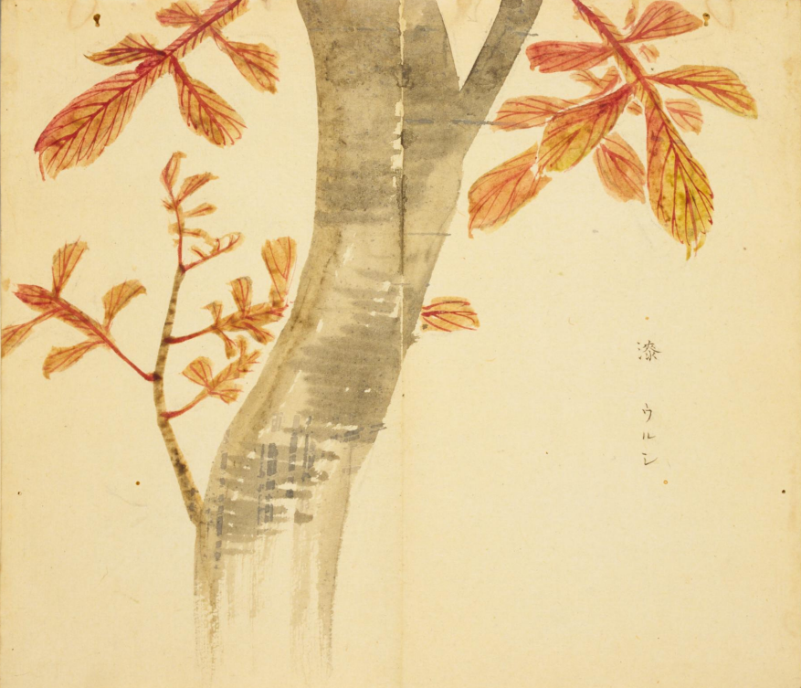
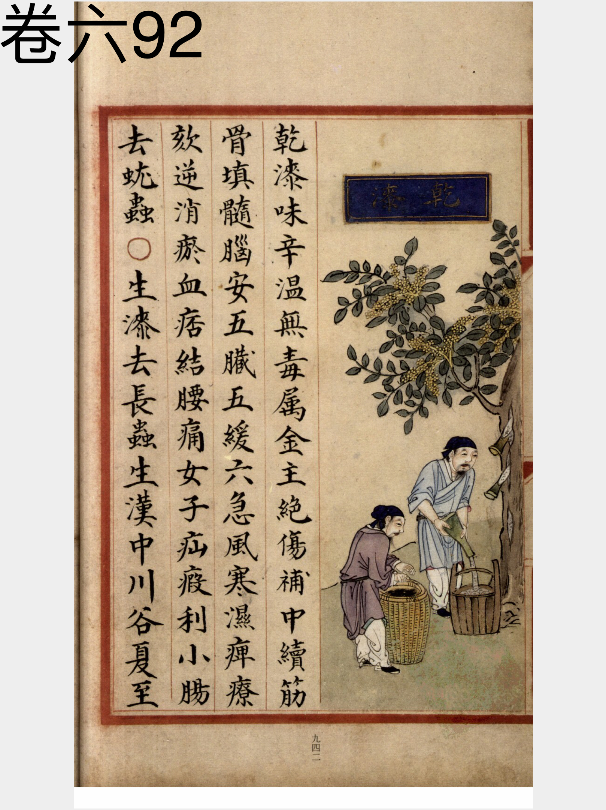
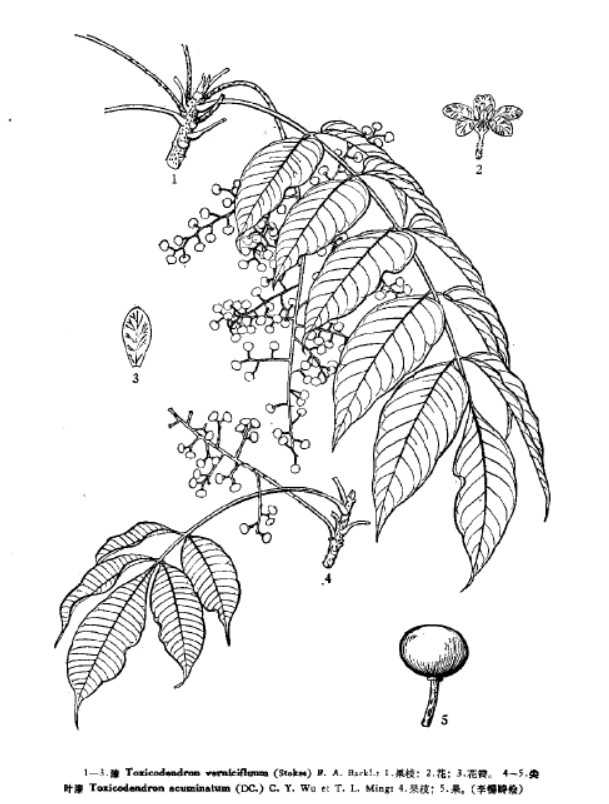

出现篇目
别名 桼
古代记载
《诗集传》
漆、木有液黏、黑可饰器物。（《诗集传》集注《定之方中》）
《本草纲目》
《别录》曰∶干漆生汉中山谷。夏至后采，干之。 弘景曰∶今梁州漆最甚，益州亦有。广州漆性急易燥。其诸处漆桶中自然干者，状如蜂房孔孔隔者为佳。 保升曰∶漆树高二、三丈余，皮白，叶似椿，花似槐，其子似牛李子，木心黄。六月、七月刻取滋汁。金州者最善。漆性并急，凡取时须荏油解破，故淳者难得，可重重别制拭之。 上等清漆，色黑如瑿，若铁石者好。黄嫩若蜂窠者不佳。颂曰∶今蜀、汉、金、峡、襄、歙州皆有之。以竹筒钉入木中，取汁。崔豹《古今注》汁则成漆也。 得阴湿，虽寒月亦易干，亦物之性也。若沾渍人，以油治之。凡验漆，惟稀者以物蘸起，细而不断，断而急收起；又涂于干竹上，荫之速干者，并佳。 移栽易成，有利。其身如柿，其叶如椿。以金州者为有云∶微扇光如镜，悬丝急似钩。撼成琥珀色，打着有而大。六月取汁漆物，黄泽如金，即《唐书》所谓黄漆者也。入药仍当用黑漆。广南漆作饴糖气，沾沾无力。
当代记载 《中国植物志》
漆 （Toxicodendron vernicifluum），漆树科，漆树属植物。落叶乔木，高达20米．树皮灰白色，粗糙，小枝粗壮，被棕黄色柔毛。奇数羽状复叶互生。花黄绿色。外果皮黄色，无毛，具光泽，中果皮蜡质，具树脂道条纹，果核棕色，与果同形，长约3毫米，宽约5毫米，坚硬；花期5-6月，果期7-10月。 除黑龙江、吉林、内蒙古和新疆外，其余省区均产；生于海拔800-2800(-380）米的向阳山坡林内，也有栽培。分布于印度、朝鲜和日本。

<细井徇>

<补遗雷公炮制便览>

<中国植物志>